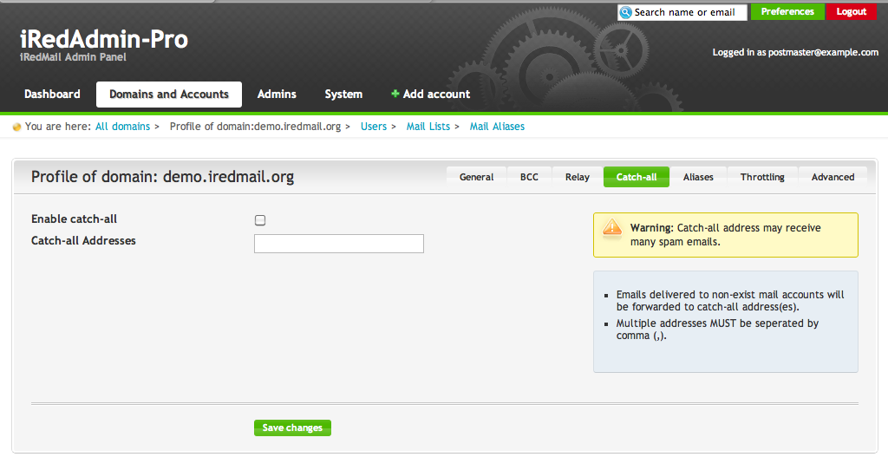

Attention
With default setting, iRedMail will reject emails sent to non-existing mail accounts under hosted mail domains. If you want to accept these emails, you need a domain catch-all account.
With MySQL/MariaDB or PostgreSQL backend, you can add catch-all account for
existing domain domain.com in SQL table vmail.forwardings like below:
$ mysql -u root -p
sql> USE vmail;
sql> INSERT INTO forwardings (address, forwarding, domain, dest_domain)
VALUES ('domain.com', 'dest@example.com', 'domain.com', 'example.com');
This sql command creates catch-all address for domain domain.com, all mails
sent to non-existing accounts under domain.com will be delivered to
dest@example.com.
NOTE: With iRedAdmin-Pro, you can manage catch-all account in domain profile directly. Screenshot attached.
